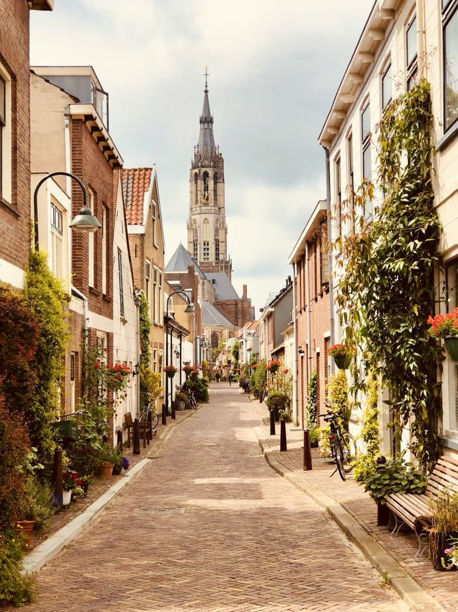

Venue & travel
On campus at TU Delft
All sessions take place on the campus of Delft University of Technology, in a lecture room and a computer lab for the hands-on sessions. The DAPwell site visit on Day 2 is a short walk away. The exact building and room will be announced here.
Getting to Delft
- By plane: Amsterdam Schiphol has direct trains to Delft station. Rotterdam The Hague Airport is closer and connected by bus and taxi.
- By train: Delft station is on the main line between Rotterdam and The Hague, with frequent intercity trains. Plan trips at ns.nl.
- To campus: buses and the tram run from Delft station to the TU Delft campus, about 10 minutes. It is also a 20–25 minute walk or a short bike ride.
Accommodation
Participants arrange their own accommodation. Delft has hotels in the historic centre, within walking or cycling distance of campus. Rotterdam and The Hague are 10–15 minutes away by train and have more options. May is a busy month, so book early.

Address
Delft University of Technology
Delft, the Netherlands
Building and room to be announced.
Social programme
Icebreaker reception, Wednesday 12 May
After the first day of sessions. Meet the other participants, speakers and organisers.